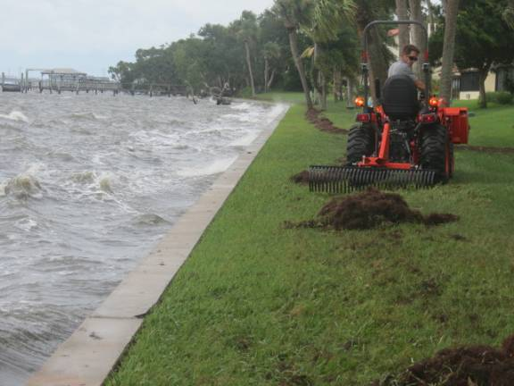
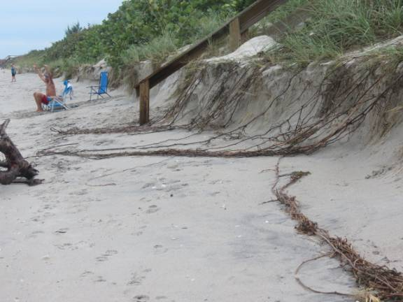

You may reach
me, the self-appointed editor, at 321-768-0766 or garyhouchens@hotmail.com.
Follow-up on
Hurricane Dorian The apparent
expense and labor hours for Beach Woods post-Dorian seems to be cleanup from
the tree residue (mostly from palm trees) and the seaweed washed ashore by the
IR Lagoon. See the photo of Jason and the raking job. The high water level and
the wave action in the photo have now dissipated. The mass of vegetation is not
nearly as great as Hurricane Matthew and did not extend as high in the grass. 
Both swimming pools are open – chairs and umbrellas returned from
storage. ·
Pier/dock is open and intact. ·
The crossover to the beach is undamaged, but more bottom steps
have lost the sand covering them. ·
Tennis/pickleball courts still are missing the nets and wind
screens that had been removed in anticipation of the winds. ·
Entrance gates have not been reinstalled. ·
No private fences appeared to have toppled due to the winds. ·
The picture below indicates that the sea oats (grass) and sea
grapes may have helped lessen the erosion. But the turtle nests were not so
lucky as many were uncovered, creating a feast for predators and scavengers.
(However, the newspaper reported that turtles overall have had a good season.
But try telling that to the hapless baby turtles and their mothers.) ·
 IMG 7814 Dunes
Loss
Social
Calendar Upcoming Events Save the dates.
Details will be on the bulletin board when closer to the event date. ·
Wine at the pier Friday, 18 October ·
Luau in clubhouse Saturday, 9 November Non-Emergency Medical
Help The Facebook
site “Friends of Melbourne Beach” posted a non-emergency phone number
for incidents at home that do not require medical attention. An example
would be if someone has fallen and help is needed to pick up the person. When
calling just explain it is a non emergency and the reason for your call.
The Melbourne Beach Fire Department is the unit that responds 24/7.
The important
number is 321-773-7212. Hats off to Sharon Benner and Francine Munkascy
for this info.
Free Publix
Gift Card Publix Supermarket
(the closest, a mile south of BW) is offering a free Publix $10 gift card to
those receiving a flu shot at their pharmacy. They apparently will give them
out until Dec. 31.
Gary Houchens 321-768-0766